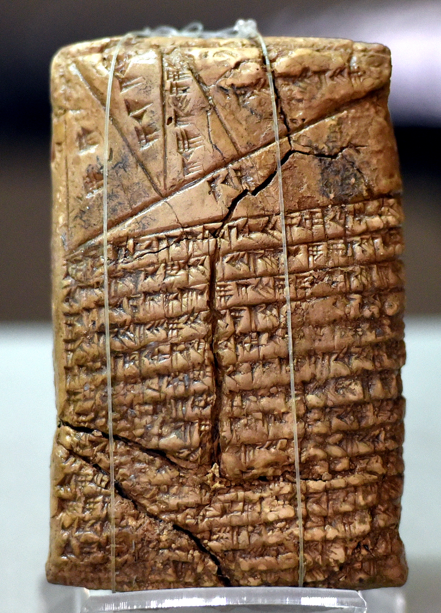
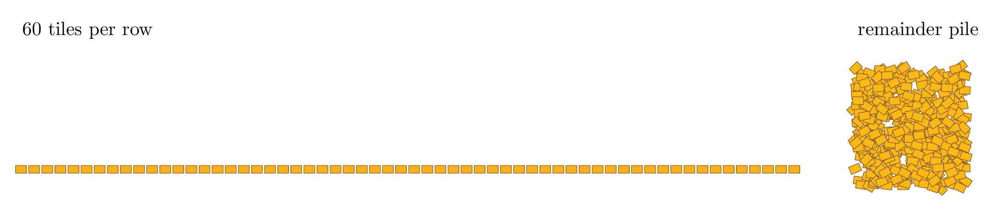
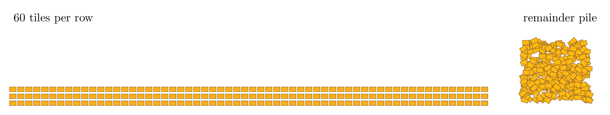
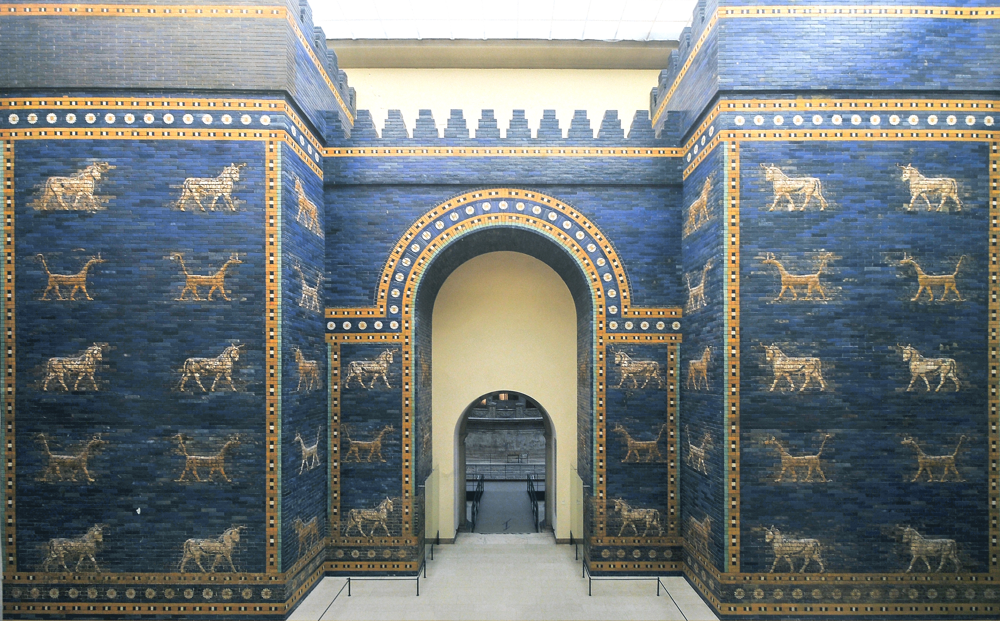

Proofs, Programs, and Diagrams

Of course today we have apps and devices that do all this for us and increasingly Artificial Intelligence (AI) is taking on many more complex chores. Looking back at something this old and familiar gives a predictable occurrence of a pattern that underpins why AI is not only possible, but inevitable, and on the whole not that mysterious. It is the start of the Curry-Howard-Lambek correspondence that links mathematical proofs, computer programs, and the linguistics of diagrams.
Math, computation, and language play very different roles in our lives. Math gives us guarantees. Computation accesses answers our minds are too slow and imprecise to ever achieve. Language, well that’s what we use to spread our questions and answers, communication. So if they are interchangeable then perhaps it is no longer a surprise that a machine can talk to us like we talk to people while also providing certainty and efficiency. It is not all of language that is equal to computation, just the small sliver that relates to diagrams. Humans appear to have a substantial extension of language beyond diagrams so we probably have more to say than computation ever will. Yet, the power to relate these three achievements of our species surprises many to the point of seeming unbelievable. To see how it came to be known we can start with the story of division.
Division by repeated tiling
Suppose we have \(541\) tiles and we need to make a wall that is \(60\) tiles wide. The problem is that 2-3 tiles per row break or do not match and cannot be used. How many rows can we expect to tile?
You could answer this by putting down your first \(60\) tiles leaving \(541-60=481\) tiles.

Then we repeat until there are fewer than \(60\) tiles. The steps would be 

Wait a moment! This is getting repetitive and tedious. But then you remember that yesterday you had the same problem but instead of \(541\) tiles you had \(361\) tiles. So you can skip repeating your work and just look up the work you did yesterday. \(361\) tiles over rows of \(60\) gave you 6 rows with 1 tile left over. That is, \[ 361 = 6\cdot 60 + 1\text{ and } 1 < 60 \] Or to use common terminology, \(361/60=6\text{ remainder }1\) which in fraction form is: \[ \frac{361}{60} = 6 + \frac{1}{60}\text{ i.e.: `` }6\text{ and }\frac{1}{60}\text{ ''}. \] Since you got to this number by subtracting 60 away 3 times, you can just add 60 back in 3 times. \[ 541 = 3\cdot 60 + 361 = 3\cdot 60 + 6\cdot 60 + 1= 9\cdot 60 + 1. \] In other words, \[ \frac{541}{60} = 9 + \frac{1}{60}\text{ i.e.: `` }9\text{ and }\frac{1}{60}\text{ ''}. \] Assuming we reject 3 tiles per row for a total of \(9\cdot 3=27\not\leq 1\) we likely will not have a enough remaining tiles to make all 9 rows. We should get a few extra tiles or stop at 8 rows.Probably you can imagine this working with \(m\) tiles spread out \(n\) tiles wide. The goal would be to predict the number of rows \(q\) and the number of tiles \(r\) left over such that \[ m = q\cdot n + r \text{ and } 0 \le r < n. \] Despite the low-tech brick-layer story, a surprising amount of mathematics and programming has occurred here which might be better expressed by diagramming the stages. Think of the diagram as a system of pipes with filters. Material or data can flow from one shape to the next along the direction of the arrow so long as it matches the conditions of the label. Once we arrive at a shape we follow the instruction of the shape’s label before continuing. If you are unable to see the diagram you can select the source option which reads out the shapes and arrows and their labels.
---
title: Dividing m tiles into n tiles per row.
---
flowchart TD
%% Nodes
Start[q=0, r=m]
First_Question{Is r less than n?}
First_Yes[Stop]
First_No_Second_Question{Already know r = q' n + r' with r' < n?}
Second_Yes[Set q to q+q', r to r']
Stop[Stop]
Second_No[Replace r with r-n]
Update[Increase q by 1]
%% Arrows
Start --> First_Question
First_Question -->|True| First_Yes
First_Question -->|False| First_No_Second_Question
First_No_Second_Question -->|True| Second_Yes
First_No_Second_Question -->|False| Second_No
Second_No --> Update
Update --> First_Question
Second_Yes --> Stop
%% Optional colors and shapes
classDef stopNode fill:FireBrick,stroke:DarkRed,color:white,stroke-width:2px
class First_Yes,Stop stopNodeAre flow-charts pictures?
A flow-chart need not be thought of as picture. In fact the picture is intentionally meant to allow for a lot of variability. You can move a node in a flow-chart to another location without interrupting the flow. So the flow-chart is actually the collection of relationships and their labels. So it is a language which might be written in words, spoken allowed, or drawn in pictures.
In fact, in our example we gave two ways to record the information in the flow-chart. The first was as a visualization of nodes and arrows. The second option just writes in words what the relationships are. For instance Start[q=0, r=m] represents a starting node with label “q=0, r=m”. In another line First_Question -->|True| First_Yes represents an arrow from the the first question node to the the first yes answer if the the first question was found to be true.
Our example source includes a few technical terms like flowchart TD and is wrapped by the symbols ```. That allowed our computer to interpret our diagram language and create the picture shown in the first tab. The specific technology we chose was Mermaid for Markdown. Learning a graphical language like this can be useful when changing designs as well as in sharing concepts with anyone who cannot see your screen. It is also enormously helpful when inputting a diagram to a chatbot or AI assistant.
In these articles the word “diagram” will be meant in the broad sense of a chart, plan, or scheme. So while many diagrams can be given as visualizations, all our concepts of diagrams will be completely accurate when presented as words or programs.
What was on the clay tablets?
Instead of remembering the work we did yesterday we could leave a memo to ourselves and anyone else of all the previous days’ divisions. This is essentially what was recorded on the clay tablets. The process of division was then to reduce the problem until we could find a memo which matched. If we never found a previous day’s division to match, well then the algorithm would continue reducing the remaining tiles until there were not enough tiles for a new row. The type of process is known as memoization (not to be confused with memorization which is the human process of recalling information).
Division was never the point, the Curry-Howard-Lambeck correspondence was.
Now pause, ignore the task, and ask yourself what exactly did we just write down in our division task?
One perspective is that we gave a list of steps to follow, a program for tiling, which results in writing down two numbers which we name quotient (number of rows) and remainder. Another perspective might argue that we started out being asked for a quotient and remainder, and we simply wrote down a proof that we could find them. Another reader might argue that the diagrams (either the progression of tiling or the flow-chart) were the main communication tool. The interchangeable perspective of proofs, programs, and diagrams when properly labeled and explained turn out to be a condition that is always present.
Curry-Howard-Lambek Correspondence. Proofs of mathematical claims, programs to compute results, and diagrams of relationships between data are interchangeable.
These articles are an exploitation and exploration of this correspondence. This discovery mergers mathematics, computation, and language. In some form this idea goes back to pre-history, but modern day credit is given to those who made it precise and clear. Haskell Curry (1900-1982) was a mathematician and computer scientist, William Howard (1926-2026) was a logician, and Joachim Lambek (1922-2014) a mathematician-linguist. By making this precise we now know that programs have the benefit of 5000 years of civilization’s progress. There is a very real sense that a talented programmer is doing the same work as a great mathematician, and that a carefully sketched business model is a type of computation and mathematics. To master even one of these areas is to master them all, a fact that should humble the arrogant and embolden the timid.
Taken seriously, the Curry-Howard-Lambek correspondence means that programming is not a recent invention of the digital age. Since proofs count as programs, all of Euclid’s Elements could be seen as programs. That is a much richer history than you might have expected if you looked simply at the programming section of a library. This fact is reinforced by other recent observations. Famously Alan Turing clarified that all computations behave by fixed rules of computation, the rules of what today we call a Universal Turing Machine in his honor. Armed with that insight, Minsky, Malzek, and Lambek were able to show that those rules were already true of the simple abacus! Truthfully, computers in some form have existed for as long as we have recorded human writing. We just have faster ones today.
One of the places we are seeing the swiftest impact of this correspondence between math, computation, and language is in the field of Artificial Intelligence (AI), specifically Large Language Models (LLMs). Many of the major advance in AI are owed to Program Synthesis where a prompt in natural language gets converted into a mix of programs to run in a conventional programming environment and their results fed to mathematical proofs to test and verify. The Curry-Howard-Lambek correspondence not only explains why this was possible, but predicts it was inevitable. These are three sides of the same triangle.
At the moment our statement of the Curry-Howard-Lambek correspondence is too vaguely stated and runs the risk of being misrepresented in mystical terms. It is not a free lunch. It takes work to use all these concepts interchangeably without distorting the original intent. It reminds me of a conversation I once had on the topic with a fellow mathematician who replied:
This is either profound or wrong!
–Anonymous colleague of the Hausdorff Institute for Mathematics.
In the coming articles more details will be added to ensure that what we exploit is factual. Yet, I warn you now that it wont be my purpose to defend this correspondence to the extent that the three named authors have. You can take that up in followup studies. These articles will focus instead on the impacts of the correspondence in improving day-to-day problem solving with computation as a support.
Angle Trisection and the limits of avoiding technology
Having brought up AI and the inter-operability of proofs, programs, and diagrams; there may be some fears about how to compete with the speed and scale of a machine. To offer some perspective, let us close with a story where mathematics could not have been done without new technology. I don’t mean something with huge numbers and minute details where our life spans and fragile bodies are the problem. I mean problems which eventually humans managed to show could never be done no mater how long we or machines work. Perhaps you have heard of some of these “impossible” problems, such as
- Trisecting angle: can you use a ruler and compass to divide any angle into thirds?
- Squaring the circle: can you start with a circle and construct a square with the same area using only a ruler and compass.
- Solving quintic equations: can you find a general solution for polynomial equations of degree five using radicals like \(\sqrt{x}\), \(\sqrt[3]{x}\), etc.?
At different stages in history these and many problems like them were brought up and found no solution. Only in the last 200 years have we found that the mathematics necessary to explain why they were not solvable. They were “unsolvable”. It is a beautiful story in human achievement to dream up problems that cannot be solved and to be able to prove that they cannot be solved. But that is not the story I want to tell.
Instead I want to point out that life did not require that we only use a ruler and compass, nor that we limit ourselves to formulas that only involve \(n\)-th roots and arithmetic. We are far more creative species. And with that creativity we invented other tools. It turns out that if you draw an angle on paper there are simple rules to fold the angle into thirds! The limitation was the ruler and compass.
See for yourself and try it on your own angles.
And here is an interactive proof for why it works.
Angle Trisection with Origami (Tim Brzezinski’s GeoGebra demonstration of Hisashi Abe’s angle trisection fold.)
In fact, Archimedes had found a method to trisect an angle using a marked ruler and compass already in 200 BC. A similar fate befell the other “unsolvable” problems of antiquity. They were not actually “unsolvable” as problems so much as they were lessons that if you limit your toolbox you might get stuck.
Technology is not just about making things faster, cheaper, and more precise. Sometimes it is the switch between the impossible and the possible.
Archetypes and why I tell stories
You must be asking yourself how reading about division using a tiles is going to prepare you to work with Artificial Intelligence, Data Science, or anything else modern. After all, almost every programming language already lets you divide by typing m/n or m div n or with a button \(\div\). In fact an operation this basic would be etched into the silicon of modern micro-processors “chips”. So why even discuss division?
Firstly, the Babylonians built giant pyramids called ziggurats, fountains, gardens, predicted eclipses well into the future, and yes laid tile-bricks like those in marvelous Ishtar gates still on display thousands of years later. So having division on the mind is not a sign of intellectual weakness.

Secondly, be assured that these articles focus on many state-of-the-art topics in mathematics, computation, and data science. Examples like division are chosen as enduring examples, known as archetypes, which use stories of events that are so familiar they are easily personalized. Think for a moment about the same story but where we replace tiles with eggs in cartons, or the products manufactured in an assembly line. Production will be successful if it can fill the packaging with a remainder large enough to cover the expected number of rejects. Want a computer related story? Shift to discussing the transmission of a file in fixed-size packets with an expected error rate in the transmissions. The story of tiling is not one story, but a skeleton to retell your own way.
Always be prepared to give an account of what you know in the language your audience wants to know it. The first time might be in an interview that lands you the job. Later you can use that skill to get the trust of a boss or client. You may become a mentor or teacher. And finally we should not forget those friends and family who just want to connect with what we do. Surely it is up to the person who understands to make the larger effort to be understood. These stories are for others. Use them, personalize them, and you might find your own understanding deepened as well.
Summary
- Division is a fact about integers, a program, and scheme relating addition and multiplication.
- The Curry-Howard-Lambek correspondence shows the division example is true of all proofs, programs, and diagrams.
- This correspondence is a part prediction and part explanation for artificial intelligence.